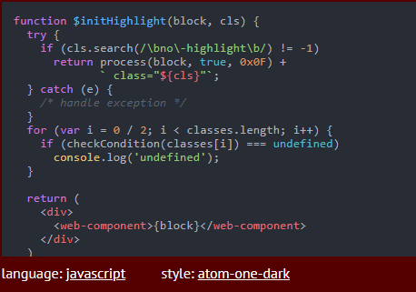

JavaScript
- JavaScript
- Возможности языка
- Семантика и синтаксис
- Встраивание в веб-страницы
 JavaScript (/ˈdʒɑːvɑːˌskrɪpt/; аббр. JS /ˈdʒeɪ.ɛs./) — мультипарадигменный язык
программирования. Поддерживает объектно-ориентированный,императивный и функциональный стили. Является
реализацией спецификации ECMAScript (стандарт ECMA-262[9]).
JavaScript (/ˈdʒɑːvɑːˌskrɪpt/; аббр. JS /ˈdʒeɪ.ɛs./) — мультипарадигменный язык
программирования. Поддерживает объектно-ориентированный,императивный и функциональный стили. Является
реализацией спецификации ECMAScript (стандарт ECMA-262[9]).
JavaScript обычно используется как встраиваемый язык для программного доступа к объектам приложений. Наиболее
широкое применение находит в браузерах как язык сценариев для придания интерактивности веб-страницам.
Основные архитектурные черты: динамическая типизация, слабая типизация, автоматическое управление памятью,
прототипное программирование, функции как объекты первого класса.
На JavaScript оказали влияние многие языки, при разработке была цель сделать язык похожим на Java. Языком
JavaScript не владеет какая-либо компания или организация, что отличает его от ряда языков программирования,
используемых в веб-разработке.
Название «JavaScript» является зарегистрированным товарным знаком корпорации Oracle в США[12].
В 1992 году компания Nombas (впоследствии приобретённая Openwave) начала разработку встраиваемого
скриптового языка Cmm (Си-минус-минус), который, по замыслу разработчиков, должен был стать достаточно
мощным, чтобы заменить макросы, сохраняя при этом схожесть с Си, чтобы разработчикам не составляло труда изучить
его[13]. Главным отличием от Си была работа с памятью. В новом языке всё управление памятью осуществлялось
автоматически: не было необходимости создавать буфера, объявлять переменные, осуществлять преобразование типов.
В остальном языки сильно походили друг на друга: в частности, Cmm поддерживал стандартные функции и
операторы Си. Cmm был переименован в ScriptEase, поскольку исходное название звучало слишком
негативно, а упоминание в нём Си «отпугивало» людей[13][15]. На основе этого языка был создан проприетарный
продукт CEnvi. В конце ноября 1995 года Nombas разработала версию CEnvi, внедряемую в
веб-страницы. Страницы, которые можно было изменять с помощью скриптового языка, получили название Espresso
Pages — они демонстрировали использование скриптового языка для создания игры, проверки
пользовательского ввода в формы и создания анимации. Espresso Pages позиционировались как демоверсия,
призванная помочь представить, что случится, если в браузер будет внедрён язык Cmm. Работали они только в
16-битовом Netscape Navigator под управлением Windows.
Самая первая реализация JavaScript была создана Бренданом Эйхом (англ. Brendan Eich) в компании
Netscape, и с тех пор обновляется, чтобы соответствовать ECMA-262 Edition 5 и более поздним версиям. Этот движок
называется SpiderMonkey и реализован на языке C/C++. Движок Rhino создан Норрисом Бойдом (англ. Norris
Boyd) и реализован на языке Java. Как и SpiderMonkey, Rhino соответствуетECMA-262 Edition 5.
JavaScript является объектно-ориентированным языком, но используемое в языке прототипирование
обуславливает отличия в работе с объектами по сравнению с традиционными класс-ориентированными языками. Кроме
того, JavaScript имеет ряд свойств, присущих функциональным языкам — функции как объекты первого класса, объекты
как списки, карринг, анонимные функции, замыкания[40] — что придаёт языку дополнительную гибкость.
 Несмотря на схожий с Си синтаксис, JavaScript по сравнению с языком Си имеет коренные отличия:
Несмотря на схожий с Си синтаксис, JavaScript по сравнению с языком Си имеет коренные отличия:
- объекты с возможностью интроспекции;
- функции как объекты первого класса;
- автоматическое приведение типов;
- автоматическая сборка мусора;
- анонимные функции.
В языке отсутствуют такие полезные вещи[41], как:
- Стандартная библиотека: в частности, отсутствует интерфейс программирования приложений по работе с файловой
системой, управлению потоками ввода-вывода, базовых типов для бинарных данных;
- стандартные интерфейсы к веб-серверам и базам данных;
- система управления пакетами[~ 2], которая бы отслеживала зависимости и автоматически устанавливала их.
Синтаксис языка JavaScript во многом напоминает синтаксис Си и Java, семантически же язык гораздо ближе к Self,
Smalltalk или даже Лиспу[32][42][Спецификация 2].
В JavaScript:
- все идентификаторы регистрозависимы,
- в названиях переменных можно использовать буквы, подчёркивание, символ доллара, арабские цифры,
- названия переменных не могут начинаться с цифры,
- для оформления однострочных комментариев используются //, многострочные и внутристрочные комментарии
начинаются с /* и заканчиваются */.
Структура языка
Структурно JavaScript можно представить в виде объединения трёх чётко различимых друг от друга
частей:
- ядро (ECMAScript),
- объектная модель браузера (Browser Object Model или BOM),
- объектная модель документа (Document Object Model или DOM).
Если рассматривать JavaScript в отличных от браузера окружениях, то объектная модель браузера и объектная модель
документа могут не поддерживаться[45].
Объектную модель документа иногда рассматривают как отдельную от JavaScript сущность[47][48][Спецификация 3], что
согласуется с определением DOM как независимого от языка интерфейса документа[49][~ 3]. В противоположность
этому ряд авторов находит BOM и DOM тесно взаимосвязанными[50][51].
Таблица реализаций языков программирования на JavaScript
| Язык |
Название реализации |
Основные авторы |
Лицензия |
| JavaScript |
s-mr |
Andrei Formiga |
New BSD |
| PostScript |
WPS |
Tom Hlavaty |
? |
| PDF |
| Ассемблер для MOS Technology 6502 |
6502asm |
Stian Soreng |
GPL |
| Objective-J |
Cappuccino |
Ross Boucher |
LGPL |
| Haskell |
ycr2js |
Tom Shackell, Neil Mitchell, Andrew Wilkinson, Mike Dodds, Bob Davie, Dimitry Golubovsky |
simple permissive license |
| Prolog |
Monash Toy Prolog |
Lloyd Allison |
? |
| ioctl |
Jan Grant |
? |
| Cat |
Cat Interpreter |
Christopher Diggins |
Общественное достояние |
Расположение внутри страницы
Для добавления JavaScript-кода на страницу можно использовать теги <script></script>[Спецификация 6],
которые рекомендуется, но не обязательно, помещать внутри контейнера <head>. Контейнеров <script> в
одном документе может быть сколько угодно. Атрибут type="text/javascript" указывать необязательно, данное
значение используется по умолчанию[56].
Скрипт, выводящий модальное окно с классической надписью «Hello, World!» внутри браузера:
<script type="application/javascript"<
alert('Hello, World!');
</script>
Расположение внутри тега
Спецификация HTML описывает набор атрибутов, используемых для задания обработчиков событий[Спецификация 7].
Пример использования:
<a href="delete.php" onclick="confirm('Вы уверены?'); return false;">
Удалить
</a>
В приведённом примере при нажатии на ссылку функция confirm('Вы уверены?'); вызывает модальное окно с надписью
«Вы уверены?», а return false; блокирует переход по ссылке. Разумеется, этот код будет работать только если в
браузере есть и включена поддержка JavaScript, иначе переход по ссылке произойдёт без предупреждения.
Использование кода JavaScript в контексте разметки страницы расценивается в рамках ненавязчивого JavaScript как
плохая практика. Аналогом (при условии снабжения ссылки идентификатором alertLink)
<a id="alertLink">
Удалить
</a>
приведённого примера может являться, например, следующий фрагмент JavaScript:
window.onload = () => {
const linkWithAlert = document.getElementById('alertLink');
linkWithAlert.addEventListener('click', async () => {
if (confirm('Вы уверены?')) {
await fetch('delete', {method: 'DELETE'})
}
})
};
Вынесение в отдельный файл
Есть и третья возможность подключения JavaScript — написать скрипт в отдельном файле, а потом подключить его с
помощью конструкции
<body>
<script type="application/javascript" src="http://Путь_к_файлу_со_скриптом">
</script>
</body>
Наверх